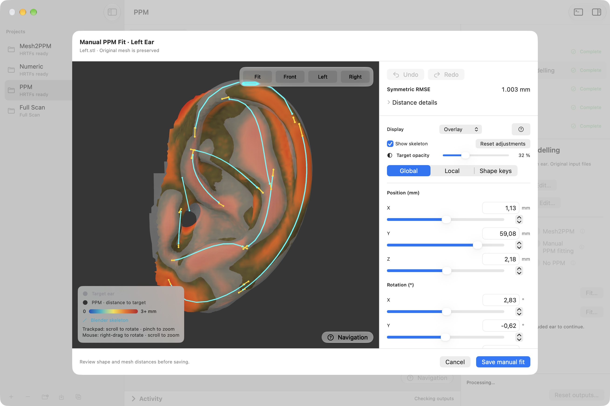
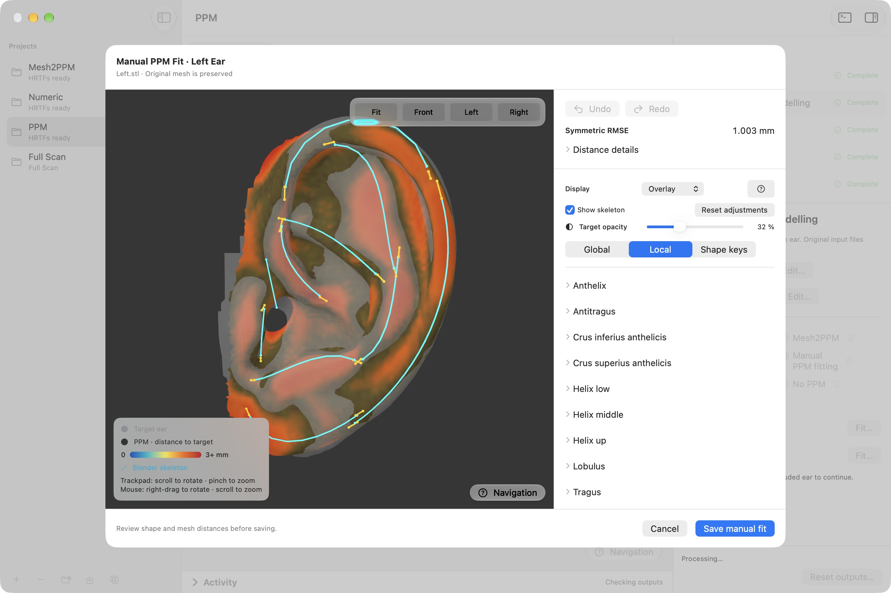
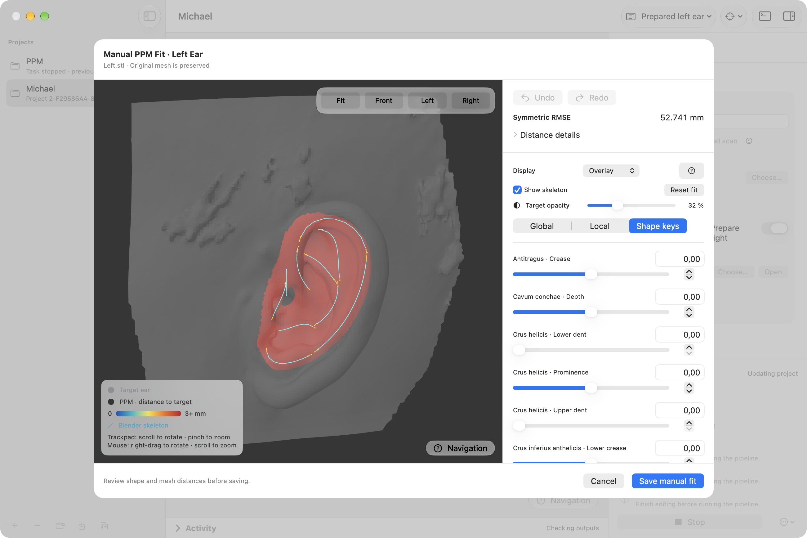

Fitting the ear model by hand
Fit a parametric pinna model (PPM) to your ear mesh, check the fit, and save it for simulation. Mesh2PPM inference does this automatically; manual fitting lets you do it yourself.
Written for version 2.0. The current download is v1.1.0, so a few things may look different in your copy.
Open a fit
In Project Settings, find Manual PPM Fit and choose Fit… for the left or right ear. A source mesh must be available for that side. The original mesh is preserved.
1. Match the whole ear
Start in Global. Adjust the position, rotation, and scale to align the model with the target mesh. Position is in millimeters and rotation is in degrees. Drag to rotate and scroll to zoom; use the camera controls to inspect different directions.


2. Refine local anatomy
Switch to Local and expand a control group to adjust its bone parameters. Enable Show skeleton to see the posed bones through the surface. For a right ear, the model is mirrored across Y; control axes follow the template.


3. Adjust shape keys
After global and local fitting, use Shape Keys to adjust individual features. Changes update the preview automatically. Undo and Redo let you compare adjustments; Reset adjustments resets all model controls.


4. Inspect the fit
Choose Overlay, Target, Error Map, or Hidden from Display. Target opacity helps reveal the model underneath. The error colors run from 0 to 3 mm or more.
Check Symmetric RMSE and expand Distance Details for more statistics. These use nearest-vertex distances, so inspect the anatomy visually too.
5. Save and use it
Choose Save Manual Fit, then enable Use saved manual fits in Project Settings to use fitted geometry for preprocessing. An ear without a saved fit keeps its current preprocessing source. If the source changes, refit that ear. Project Settings reports when a saved fit is out of date.